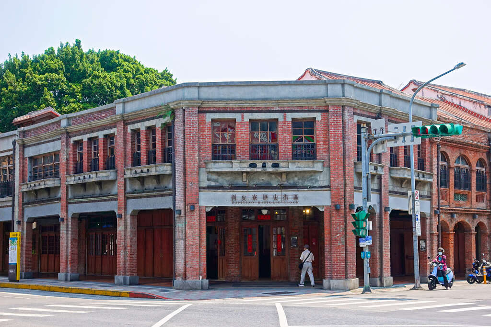

剝皮寮
乾隆28年（1763年）「北皮藔街」的名稱即將出現於艋舺地契中，推估剝皮寮聚落成形於清代早期，至今已有兩百多年，清治時期的剝皮寮，已有店屋的型態，且皆已街名稱之，表示具相當發展之聚落形成。舊有剝皮寮街（今之康定路173巷）與廣州街間有一塊空地，二戰期間日本政府徵收作消防水池的遺址。現在鄰近的康定路和廣州街交會口一帶的路段，則因早期發展為煤炭販售集散地而通稱「土炭市」，當時曾是商業交易熱絡的街道，擁有不少精緻的洋房，至今仍保有初期開發的空間特色與都市紋理。
這裡的房子是由紅磚建成的，擁有拱型騎樓、雕花窗櫺充滿歷史古味的老地方。在入口處，有許多的插畫，樓面有兩種不同厚度的紅磚，扁薄些的是傳統閩南磚，厚一點的則是清水磚，也就是我們常見的紅磚種類之一。剝皮寮是一個很有年代氣息的地方，雖然能逛的東西不多但是很有意義，許多人都會到這裡拍這留念。
